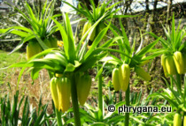

| Phrygana: la Nature en Crète principalement, mais aussi d'ailleurs au gré des rencontres... |
|
|
|
 |
| Larus ridibundus | Ravenala madagascariensis | Fritillaria imperialis |
| Espèces: 699 --- Faune: 337 -- Flora: 357 -- Galles (Bacteria-Fungi): 5 | |||||
| Nouveautés | |||||
| Fauna: | Theria rupicapraria | Fauna: | Xylocampa areola | Flora: | Parodia chrysacanthion |
| Fauna: | Agonopterix propinquella | Fauna: | Anas platyrhynchos | Fauna: | Phalacrocorax carbo |
| Flora: | Medicago truncatula | Flora: | Viburnum opulus | Fauna: | Gallinula chloropus |
| 13 février 2016 |
| Photographies © phrygana.eu & © Paul Fontaine |
| No part of this work may be used for
commercial purposes without the written permission of the author. Aucune utilisation commerciale n'est possible sans l'autorisation écrite de l'auteur. |